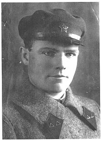
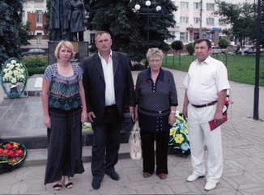
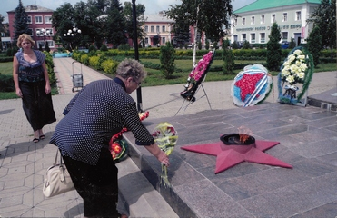

| Мой отец – старший сержант Корягин Николай Николаевич погиб во время Великой Отечественной войны, умер от ран. Если умер, значит где-то похоронен. Мы с мамой много лет искали, где же он похоронен. Писали во все инстанции, во все архивы, но отвечали, что Корягин Н. Н. нигде не числится.
И совершенно случайно услышала рассказ одной женщины о том, как они нашли захоронение отца, которое тоже долго искали. Она сказала, что в Твери есть такой фонд: «Жить и Помнить».
Я собрала папины письма и пошла в этот фонд. Ответственный секретарь фонда Терентьев Александр Михайлович внимательно выслушал меня, прочитал папины письма и в одном из них нашёл место, откуда оно было отправлено: станция Чернянка.
Александр Михайлович по компьютеру долго искал и нашёл такую справку, в которой говорилось, что мой отец умер от ран в госпитале. Госпиталь находился в посёлке Чернянка Белгородской области.
Александр Михайлович сделал запрос в военкомат Белгородской области. Там подтвердили, что мой отец Корягин Николай Николаевич 1910 года рождения действительно умер от ран в этом госпитале и был захоронен в братской могиле на территории этого поселка.
После этого мы созвонились с Главой администрации городского поселения Бирюковым Виктором Михайловичем от которого получили подтверждение этих сведений. 4 июля 2011 года мы с двоюродным братом поехали в Чернянку. Здесь нас очень тепло приняли. Вместе с главой администрации Виктором Михайловичем мы посетили братскую могилу. Она расположена в центре посёлка, на ней постоянно горит вечный огонь. Надгробных плит много, мелким шрифтом написаны фамилии, видно сильные бои были здесь. Возложили цветы, постояли, почитали фамилии, вдруг кто знакомый найдётся. У папы ещё один брат погиб, не знаем где. Надписи фамилии папы ещё нет, но Виктор Михайлович сказал, что плиту заказали и должны уже скоро сделать.
Были мы и в музее боевой славы. Музей хороший, но тесновато, правда скоро он переезжает в новое здание которое уже построено.
Нас устроили в гостиницу, угостили обедом, одним словом - встретили как родных. Показали нам и сам посёлок. Захоронений солдатских несколько. Все могилы ухожены, всё в цветах. Школьники шефствуют над могилами. Посёлок очень чистый, компактный, есть четыре школы, пять детских садов, к стати очередей в детские сады нет. В поселке есть стадион, два бассейна, клуб. Еще запомнился памятник чернобыльцам и аллея героев войны.
Затем нам предложили экскурсию в мужской монастырь. Есть что посмотреть! В парке – эстрада и скамеечки под крышей. Сразу видно, что глава администрации думает о людях, об их отдыхе и рабочих местах.
В посёлке свои теплицы, выращивают рассаду цветов, люди работают на птицефабриках. Их несколько в округе, развозят рабочих в комфортабельных автобусах, район серьезно занимается сельским хозяйством.
На территории поселка в центре и на окраинах чисто и убрано. Дворники два раза в день выходят на уборку территории. Нам все очень понравилось, но особенно радушный и теплый прием, внимание к нам со стороны руководства муниципального образования.
Очень хочется поблагодарить всех, кто принимал участие в поиске захоронения моего отца, особенно Александра Михайловича Терентьева, Виктора Михайловича Бирюкова, тех, кто принимал нас в Чернянке в музее, в гостинице, в редакции газеты. Всем низкий земной поклон.
|